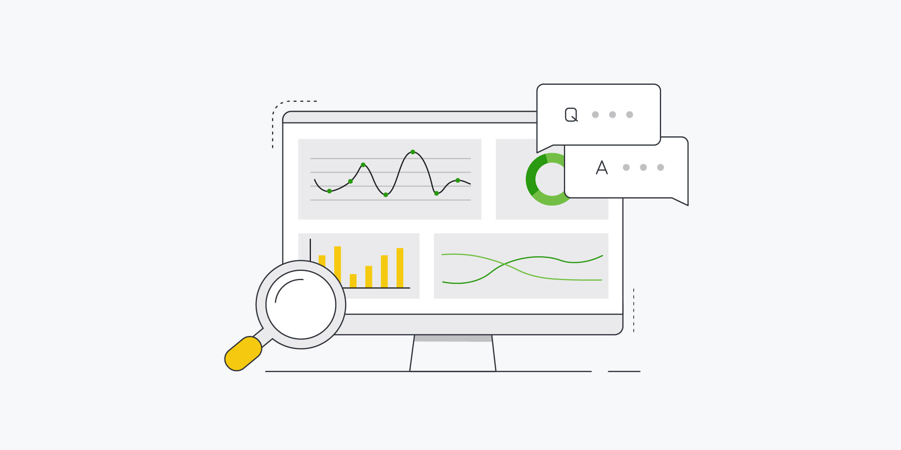
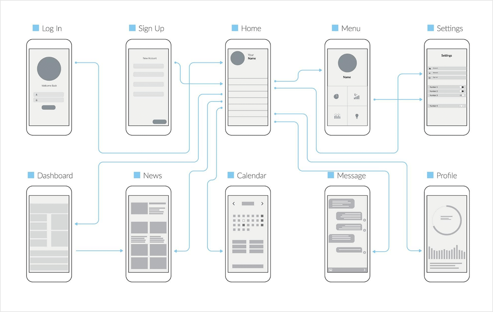
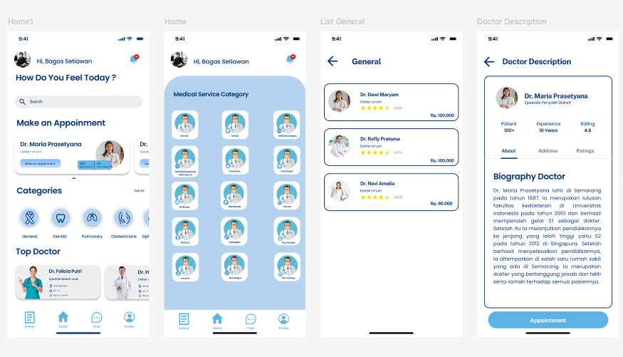
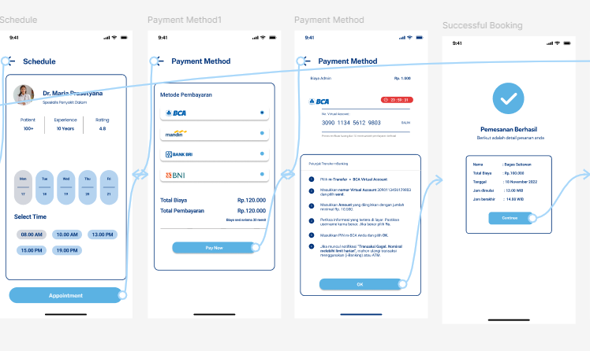

Mobile App Tanya Dokter
This project focuses on designing and developing a complete UI/UX system for a mobile application. The workflow includes user research, wireframing, prototyping, high-fidelity visual design, usability testing, and frontend implementation. The final mobile app is already functional and matches the approved design specifications.
The design emphasizes simplicity, clarity, and ease of use, ensuring smooth navigation and a consistent experience across all screens.
1. User Research & Needs Identification
The initial phase involved conducting user research to understand needs, motivations, and pain points. Surveys, interviews, and competitor analysis were performed to create user personas and define the primary user journey. The insights gathered guided the app's direction and ensured every feature would address real-life user problems effectively.
2. Wireframes & User Flow Mapping
Low-fidelity wireframes were created to outline the structure and navigation flow of the application. This stage focused on determining content placement, interaction patterns, and screen-to-screen logic. Wireframes served as the blueprint for both the visual design and development process, ensuring functional clarity before moving into detailed UI work.
3. High-Fidelity UI Design & Visual System
With the wireframes approved, I developed high-fidelity UI screens by applying the finalized color palette, typography, spacing system, iconography, and UI components. This stage establishes the brand identity of the app while maintaining consistency across all visual elements. Each screen was polished to deliver a clean and modern aesthetic.
4. Prototyping & Usability Testing
A clickable prototype was developed to simulate real interactions within the app. Usability tests were performed to identify navigation issues, visual inconsistencies, and potential confusion points. Iterations were made based on user feedback to improve clarity, simplify flows, and enhance overall usability.
Conclusion
From early research to full mobile implementation, the project successfully delivers a modern, intuitive, and seamless user experience. The app is now fully operational and accurately represents the design vision established during the UI/UX process.